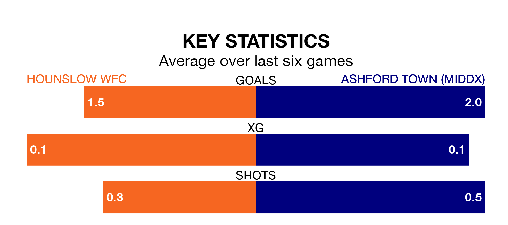

Hounslow WFC host Ashford Town (Middx) in Sunday's early match looking to bounce back from defeat last time out in the Women's National League Division One South East.
Hounslow WFC, who sit fourth in the league after 17 games, fell to a 4-2 away defeat to Actonians on Tuesday.
They face an Ashford Town (Middx) side who also lost their last match, a 6-5 defeat to Chesham United Women, and who sit sixth in the table.
With 33 goals in 15 games so far this season, Ashford Town (Middx) are scoring more than average in the league with 2.2 goals per game. And they are conceding fewer than average, letting in 26 goals at a rate of 1.7 per game.
Hounslow WFC, meanwhile, are below average scorers, with 1.9 goals per game, compared to a league average of 2.0. They have also conceded 1.9 goals per game.
The hosts are in mixed form in the Women's National League Division One South East, with two wins and three draws from their last six games.
With two wins and a draw over that period, the away team's form is slightly worse – they have taken seven points from 18, compared to Hounslow WFC's nine.
Updated: 10:31 (UTC), 31/03/24